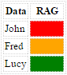

In this article I will show you how to change the colour of a cell (in a given column) in a Grid Component in the  Forms (Web) Project Type.
Forms (Web) Project Type.
This can be handy for a RAG Status or Traffic light system.
Linked Article
https://www-secure.symantec.com/connect/articles/workflow-multistatecolor-component
Add a Grid to your Web Form.
Give the Grid a name
Functionality tab
Control ID: ProdTable
This assumes the data set you are returning includes a column that lists the colour you want to show.
| Data | Colour |
|---|---|
| John | Red |
| Fred | Amber |
| Lucy | Green |
Make this the LAST column of your Table.
You want it to change to

Add the following to the onload event of the Form.
Double click on the Form, go to the Behavior Tab.
In the 'Body Custom Events' click on Add -> AttributesKeyValuePair.
| Event | onload |
|---|---|
| Event Handler | #below code# |
$(function () {
$('#ProdTable tr').each(function (index, value) {
var lastTr = $('td', value).last();
var colour = lastTr.text();
if( colour == 'Amber' )
colour = 'Orange';
lastTr.text('');
lastTr.css("background-color", colour);
});
});
*There are certain colours in CSS instead of using the HEX code, Amber is not one of them so we need to change it to Orange.
https://css-tricks.com/snippets/css/named-colors-and-hex-equivalents/
There's an interesting read on why "ChuckNorris" is a colour.
If you wish to have it update a different column you will need to change the following line
var lastTr = $('td', value).last();
and get the column you need instead.
This works fine for the first page of a Grid but the Paging is performed using AJAX so if you change to Page 2 the colours aren't updated.
To combat this
$(function() {
var previous = $("#ProdTable").text();
$check = function() {
if ($("#ProdTable").text() != previous) {
updateColor();
}
previous = $("#ProdTable").text();
}
updateColor();
setInterval(function() { $check(); }, 1000);
});
function updateColor() {
$('#ProdTable tr').each(function (index, value) {
var colour = $(':nth-child(11)', $(this)).text();
var lastTr = $('td', value).last();
if( colour == 'Amber' )
colour = 'Orange';
lastTr.text('');
lastTr.css("background-color", colour);
});
}
This uses a Timer to keep checking the Grid so it's the best performance wise solution but it works.
In Workflow 7.5 you could just map a value into a Column of
<span style="background-color:blue"></span>
You could map across the colour from the DataType using the Merge component.
This is now encoded in the Grid in 7.6, the "<" is converted to "<" etc so therefore doesn't work anymore.